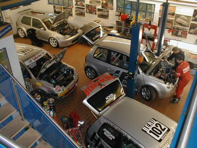

| technology |
| home page |
|
Easily replaces existing whizzer or cone separator. Premium Efficiency Cyclones Maximum particulate collection. Our Mission Continued development of fine particle processing technology. Company Profile Founded in 1992 RSG Inc manufactures fine grinding and air classification equipment. com Link to fine grinding mills var data,p;document. |
|  | Easily replaces existing whizzer or cone separator. Premium Efficiency Cyclones Maximum particulate collection. Our Mission Continued development of fine particle processing technology. Company Profile Founded in 1992 RSG Inc manufactures fine grinding and air classification equipment. com Link to fine grinding mills var data,p;document. |